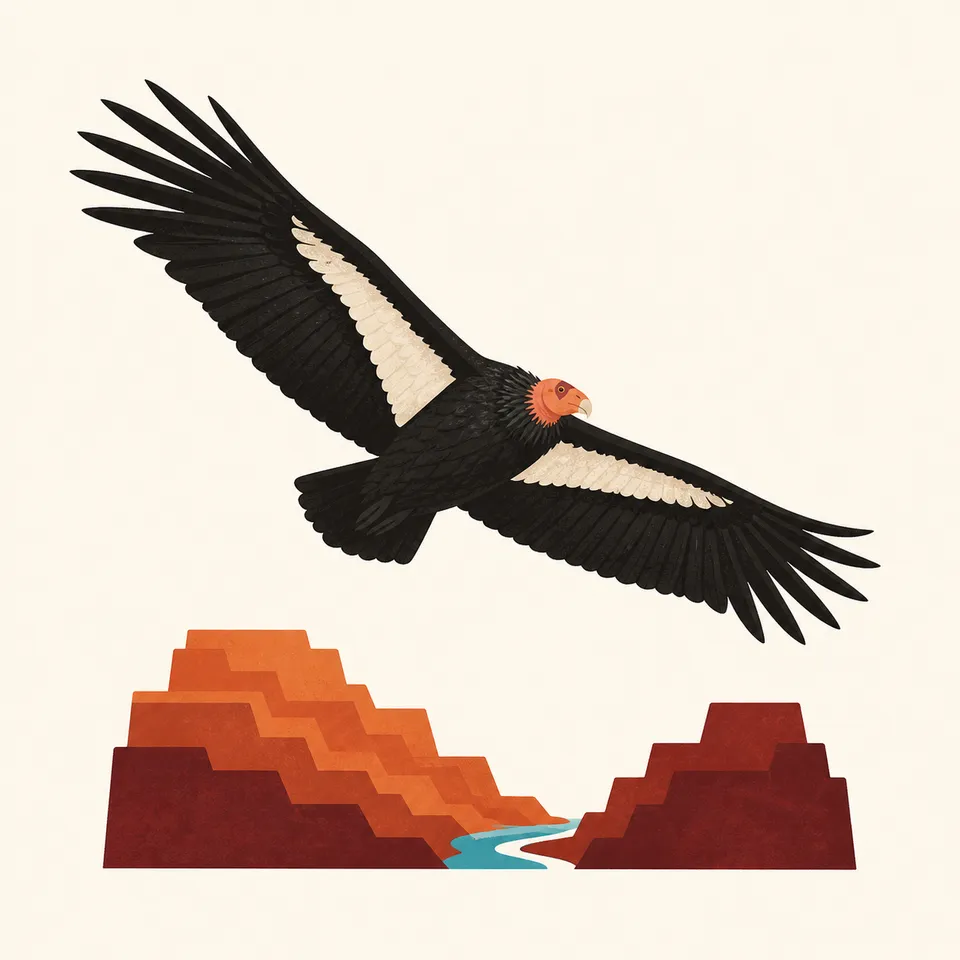
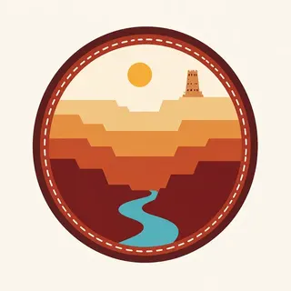

01
South Rim
The more visited rim. Overlooks stack the Paleozoic layers into one readable wall, with the river visible only where the canyon bends toward you.
TrailMark Archive Edition
Arizona | Colorado Plateau
A mile of layered stone opens under the rim, and the Colorado River keeps writing the canyon in a line too narrow to explain the space above it.
Archive No. TM-GRC-004
National Park since 1919
Collection Southwestern Parks
Park Overview
Congress designated Grand Canyon National Park on February 26, 1919, and the Colorado River still runs about 278 miles through it. The National Park Service records the park at 1,218,375 acres.
The South Rim sits near 7,000 feet and the North Rim near 8,000. Between them the canyon averages about a mile deep and, rim to rim, about 10 miles across, widening to 18 miles at its broadest.
Eleven federally recognized tribes hold relationships with this canyon that long predate the park. The essay here is a field introduction, not a substitute for those nations own histories or for current NPS conditions.
Emotional Thesis
From the rim the opposite wall looks like a painting hung too far away to touch. Walk toward the river and the painting becomes heat, switchbacks, and stone that changes color every hour.
TrailMark treats the canyon as a lesson in scale: the same view that feels instant from an overlook is a full day of effort once you step below the rim.
Landscape Highlights
01
The more visited rim. Overlooks stack the Paleozoic layers into one readable wall, with the river visible only where the canyon bends toward you.
02
Higher, cooler, and forested in spruce, fir, and aspen. The Kaibab Plateau holds a different season than the South Rim even on the same afternoon.
03
Below the rim the climate drops toward the desert. NPS lists Phantom Ranch near 2,400 feet, a different park from the one you left at the top.
Wildlife
NPS lists 91 mammal species, about 450 birds, 18 fish with 5 native, and vegetation running from spruce-fir on the rims to desert scrub by the river.

01
California condors, reintroduced to the region, patrol the thermals. Give them the sky; they are a conservation story, not a photo prop.
02
Bighorn sheep use the cliffs. The Kaibab squirrel is tied to the North Rim ponderosa forests and is not a South Rim animal.
03
Native Colorado River fishes, including humpback chub and razorback sucker, survive in a river that has been re-engineered upstream. The canyon is also a fish story.
Geology
NPS describes rocks from about 1.8 billion-year-old igneous and metamorphic stone up through roughly 230 million-year-old sedimentary layers, plus much younger volcanic deposits.
01
The Colorado River established its present course through the canyon about 6 million years ago, likely inheriting older drainages. The gorge is young compared with the stone it cuts.
02
The average river gradient inside the park is about 7 feet per mile. That modest slope, repeated for 278 miles, is enough to move a canyon.
03
Springs, side-canyon erosion, and active tectonics are still changing the walls. The canyon is not a finished monument.
Inner-canyon flowers and longer daylight. Snow can linger on the North Rim while the river corridor is already warm.
The rims are busy and the inner canyon is hot. The walk down is the easy half of the day. Check NPS before you commit to a rim-to-river plan.
Clear light on the strata and thinner crowds on many trails. North Rim services follow a shorter season than the South Rim.
Snow quiets the South Rim and closes much of the North Rim to cars. The canyon walls hold the low sun longer than the forest does.
Photography
A canyon this large goes flat in a single wide frame. Use foreground stone, side light, and the river as a scale marker.
01
Early and late sun picks the layer edges out of the haze. Midday can turn the walls into one even tone.
02
Include a tree, a person on a permitted trail, or the river thread so the mile of depth has something to be measured against.
03
Condors and bighorn are part of the picture only from a distance that does not move them off a ledge or a carcass.
Field Notes
The canyon does not get larger when you learn its numbers. It gets less possible to file under scenery.
TrailMark Field Notes

Badge Story
The Grand Canyon mark keeps the strata and the river without pretending a circle can hold 278 miles of gorge.
Red and ocher stand in for the sedimentary stairs, not for a single sunset.
The river is a thin line on purpose. Its width is the surprise.
The badge is a field mark for Arizona stone, distinct from Zion sandstone and from the evergreen parks.
Archive No.004
LocationColorado River
ReleaseFourth Archive Mark
Stewardship / Safety
Most serious trouble in the canyon starts as a short walk that turns into heat, distance, and not enough water. Facilities and road access change. Check the NPS site before you go.
Do not hike from rim to river and back in one casual outing. The climb out is the trip.
Carry more water than a rim overlook suggests, and know that inner-canyon temperatures run far hotter than the rim.
Stay behind railings. The edge is loose stone, not a viewpoint designed for a step past the sign.
Leave artifacts, fossils, and cultural sites untouched. This is an ancestral landscape as well as a geologic one.
Current conditions, fees, and alerts are on the National Park Service site.
Continue the Archive
Zion cuts the same Colorado Plateau story into a narrower canyon. Yellowstone is the volcanic chapter farther north.